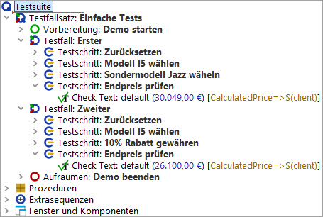
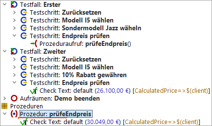
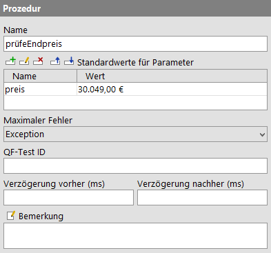
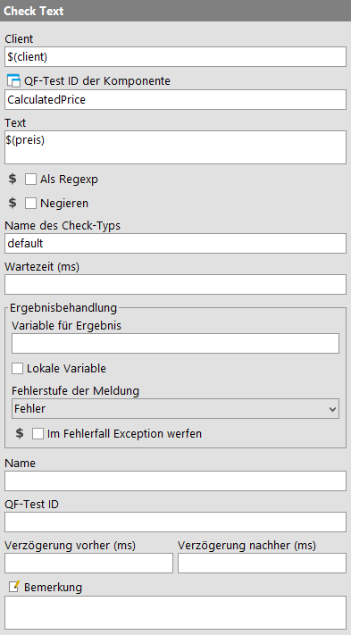

| Version 6.0.3 |
Sehen Sie sich den letzten Testschritt "Endpreis prüfen" in unseren beiden Testfällen an.
|
|  | ||
|
| Abbildung 6.1: Zwei fast gleiche Testschritte | ||
Es wird der gleiche Schritt ausgeführt, jedoch mit unterschiedlichen Daten.
Auch wenn es sich nur um einen Schritt handelt, macht es Sinn eine Prozedur
daraus zu machen. Vielleicht kommen wir später auf die Idee, die hartkodierten
Werte 30.049,00 € und 26.100,00 € in ein anderes Format zu bringen, so dass
der Check auf das Feld "Endpreis" auch für andere Währungen funktioniert.
Diesen Algorithmus zweimal zu implementieren wäre auf jeden Fall nicht sinnvoll.
|
|  | ||
|
| Abbildung 6.2: Prozedur mit hartkodiertem Wert | ||
Wie erwartet befindet sich der "Check text" Knoten in der Prozedur. Er ist jedoch
nur für einen einzigen Preis gültig, nämlich 30.049,00 €. Da wir die gleiche
Prozedur auch für den zweiten Testfall verwenden möchten, müssen wir den
Preis durch eine Variable ersetzen. Der Wert dieser Variable sollte dann
beim Prozeduraufruf mit übergeben werden.
Im nächsten Beispiel werden wir einen Parameter mit Standardwert im Prozedurknoten einfügen. Standardwerte werden häufig verwendet, wenn der entsprechende Parameter bei den meisten Prozeduraufrufen den Standardwert erhalten würde. Dann braucht man den Standardwert nicht jedes Mal zu spezifizieren, sondern kann auf den im Prozedurknoten definierten Wert zurückgreifen. Obwohl das auf den Preis als Parameter nicht zutrifft, können wir ihn gerade deshalb verwenden um zu zeigen, wie ein Standardwert funktioniert und wie man ihn bei Bedarf mit einem anderen Wert überschreiben kann.
Als erstes fügen wir also eine Variable mit Standardwert ein:
preis als Namen des Parameter ein.
30.049,00 € als Wert ein.
|
|  | ||
|
| Abbildung 6.3: Die Details eines Prozedurknotens | ||
Im nächsten Schritt ersetzen wir den Wert des 'Text' Attributs des 'Check Text' Knotens durch eine Referenz auf die Variable.
HinweisVariablensyntax: Wenn Sie mit Variablen arbeiten, ist es wichtig, sich bewusst zu sein, dass Sie an bestimmten Stellen QF-Test mitteilen wie, eine Variable heißt und an anderen, dass QF-Test auf den Wert einer Variablen zugreifen soll.
In obigem Beispiel wird QF-Test in der Namensspalte für die Standardwerte der
Variablenname mitgeteilt. In diesem Fall brauchten Sie nur preis einzutragen.
Im 'Text' Attribute des 'Check Text' Knotens soll der Wert der Variablen
verwendet werden. Bei QF-Test geschieht dies dadurch, dass Sie den Variablenname
in $() setzen, hier $(preis). Falls Sie den
Variablennamen nicht in $() setzen, würde QF-Test den Preis mit
der Zeichenfolge preis vergleichen.
$(preis) im 'Text' Attribut der 'Check Text'
Knotendetails ein.
|
|  | ||
|
| Abbildung 6.4: 'Check text' Knoten | ||
Der Testfall sollte fehlerfrei durchlaufen.
| Letzte Änderung: 6.9.2022 Copyright © 2002-2022 Quality First Software GmbH |